デザインシミュレーターの使い方【パソコン編】
オンライン上で文字やイラスト、写真等を自由にレイアウトデザインができるツールです。
パソコンやスマホでどなたでも簡単に思いのままのデザインを作ることができます。
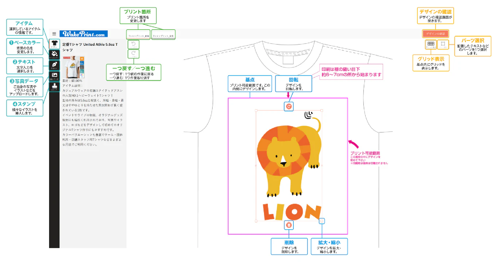
はじめてのオリジナルTシャツは
プリントワールド
相談しながら作りたい人はこちら！
メイクルの「デザインシミュレータ」は、Web上で文字やイラスト、写真等を自由にレイアウトデザインができます。特別な知識がなくても簡単にオリジナルデザインのアイテムを作ることができます。ここでは「デザインシュミレータ」の基本の使い方をご紹介しています。
オンライン上で文字やイラスト、写真等を自由にレイアウトデザインができるツールです。
パソコンやスマホでどなたでも簡単に思いのままのデザインを作ることができます。

オンライン上で文字やイラスト、写真等を自由にレイアウトデザインができるツールです。
パソコンやスマホでどなたでも簡単に思いのままのデザインを作ることができます。
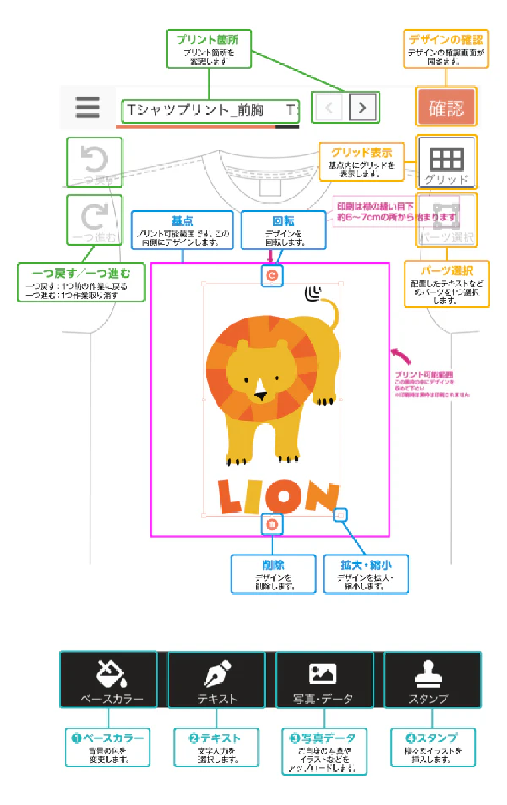
メニューから「テキスト」を選択し、切り替わった画面にある「入力フォーム」にプリントしたい文字を入力してください。
画面中央の枠の中に、入力した文字が表示されます。
複数行まとめてテキストを入力したい場合は、入力フォームの中で改行してテキストを入力してください。
入力した複数行テキストは、「左寄せ」「中央」「右寄せ」に揃えることができます。
入力した文字をカーソルで選択すると、下図のような文字ボックス(オレンジの四角)が表示されます。
ドラッグしたり、十字キーでご希望の場所に移動させることができます。
また、入力した文字のフォントを変更したい場合は、文字ボックスがついている状態で、「font」からご希望のフォントを選択してください。
※一度入力した文字において、かな書体とアルファベット書体の切り替えはできません。
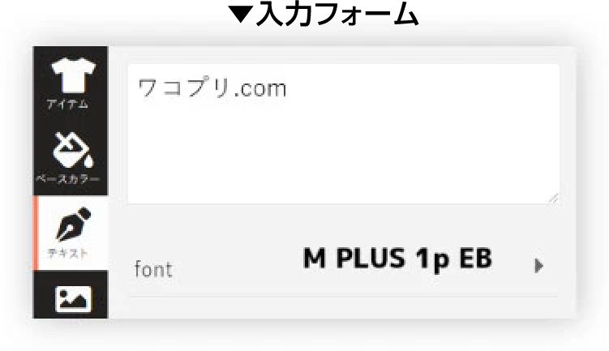
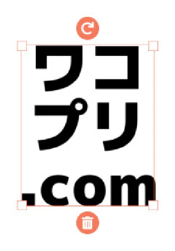
文字のカラーを変更したい場合は、文字ボックスが選択されている状態で「カラーの選択」からご希望のカラーを選択してください。
※塗りカラーの数や設定色は、アイテム種類やプリント方法により異なります。
※塗りカラーの色味はモニター環境等によって異なります。
※アイテムやプリント特性により、塗りカラーと仕上がりの色味が異なることがあります。
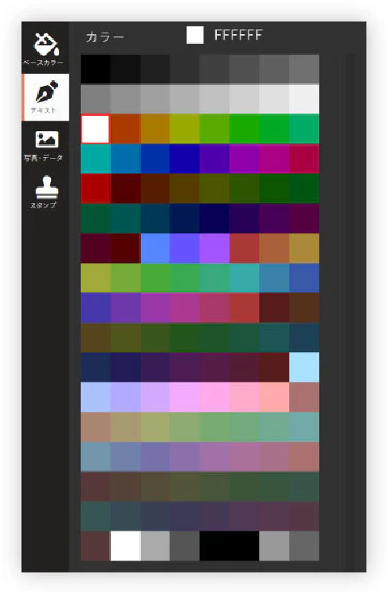
文字と文字の間の間隔(隙間)を調整することができます。
「文字の間隔調整」の [+] ボタンや[一]ボタンを押して調整してください。
「一つ戻す」を押すと、元に戻ります。
※1文字ずつの設定はできません。その場合は、別の文字ボックスに切り分けて調整してください。
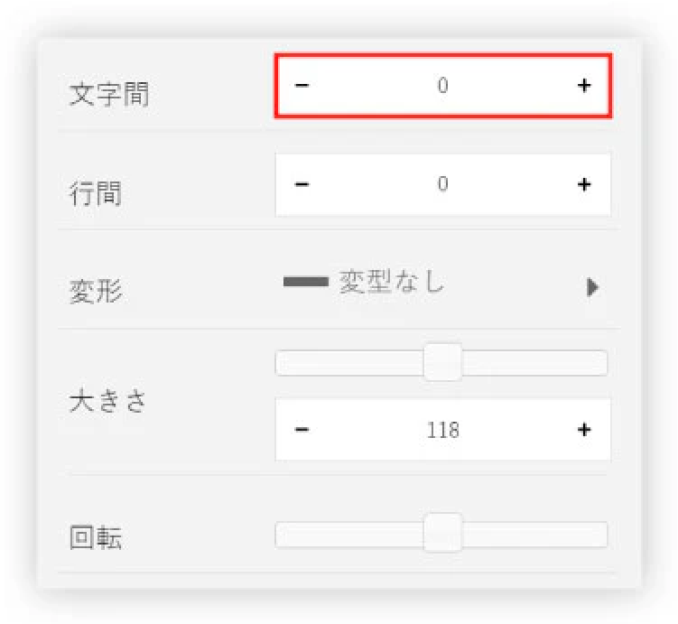
行の間隔(隙間)を調整することができます。
「行間の間隔調整」の[+] ボタンや[一]ボタンを押して調整してください。
「一つ戻す」を押すと、元に戻ります。
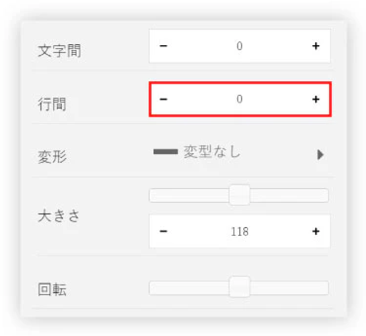
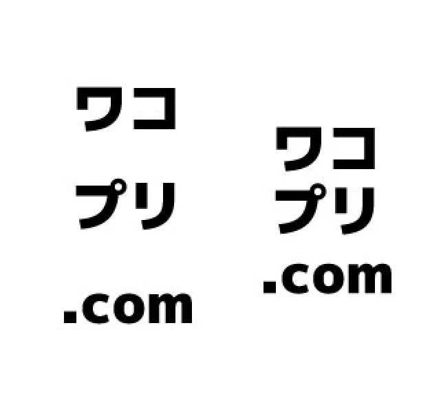
デザインツールでは、縦書きやアーチ形状にすることができます。
「変形」のプルダウンを押すと左図のような選択メニューが表示されるので、ご希望の形状を選択してください。
元に戻すときは選択メニュー内の「変形なし」を選択してください。
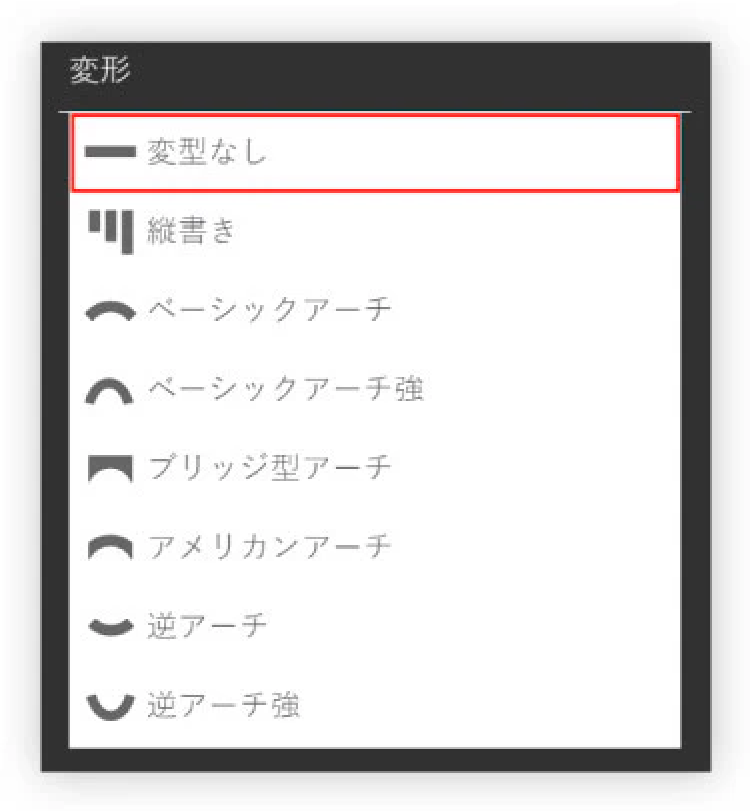
字の大きさを変更したい場合は、「大きさ」の[+]ボタンや[一]ボタンを押して調整していただくか、ご希望の数値を入力すると変更できます。
または、文字ボックスが選択されている状態で四方にある四角をクリックしたままマウスを動かしても調整できます。
※拡大縮小できる範囲(数値)は、アイテム種類やプリント方法により異なります。
※文字サイズはアイテムに対して相対的に設定しています。
※同じ大きさでも、アイテムにより、プリントサイズは異なりますのでご注意ください。
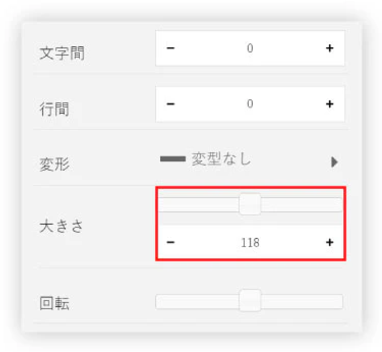
回転させたいデザインを選択し、メニューに表示される「回転」の真ん中にある四角をクリックしたままマウスを左右に動かしてください。
または選択したデザインの上にある「回転アイコン」をクリックしても回転ができます。
「shift」キーを押しながら動かすと45度ずつ回転します。
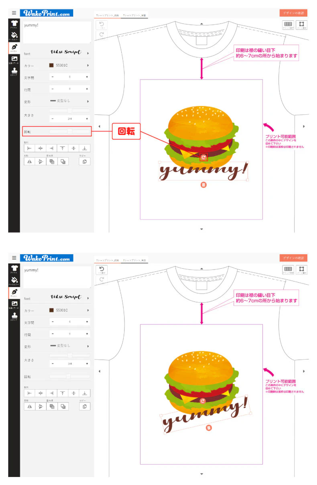
整列させたいデザインをクリックし、「整列」メニューの揃え方の一覧からご希望の揃え位置をクリックするとキャンバスに合わせて
選択したデザインが整列されます。
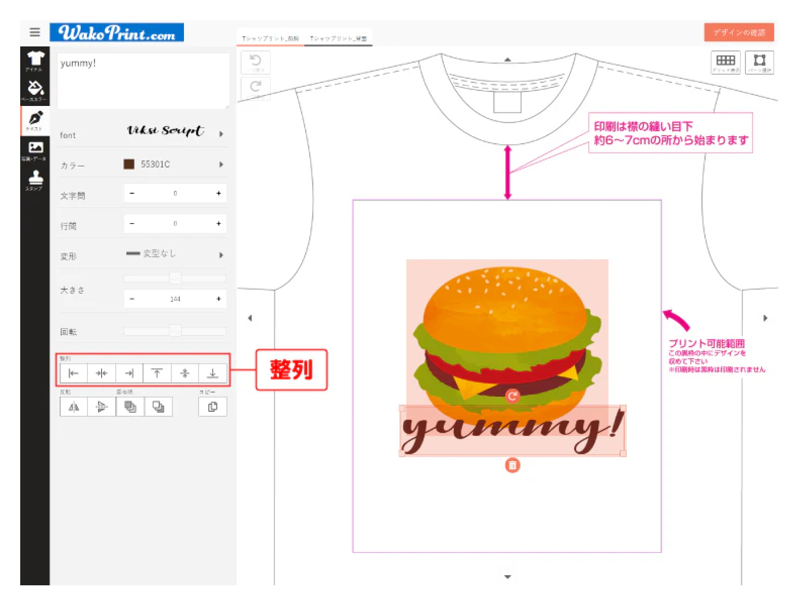
複製したいデザインを選択し、メニューに表示されている「コピー」のボタンをクリックしてください。
コピー元の上に複製されますのでクリックしたまま動かしてください。
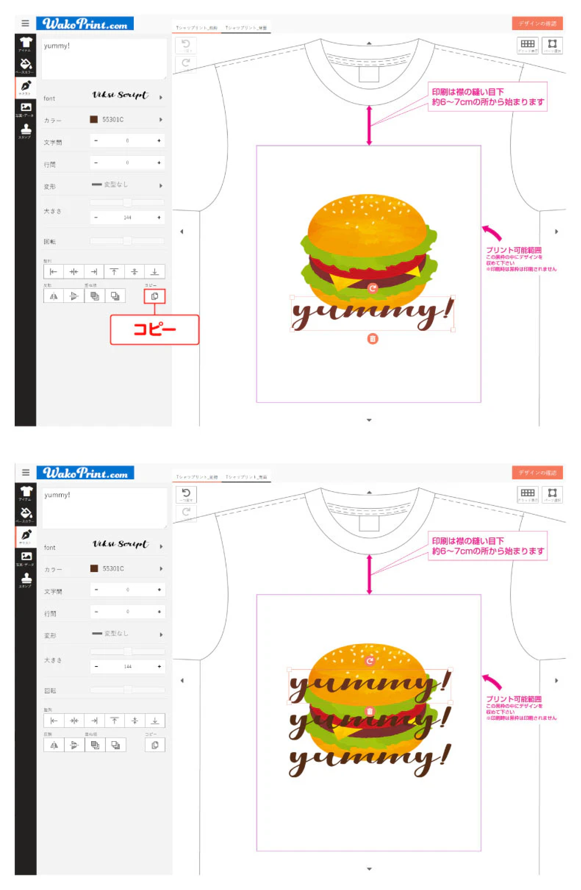
サイズを変更したいデザインを選択し、四方に表示される四角をクリックしたままマウスを動かしてください。比率を変えずに拡大・縮小できます。
またはメニューにある「拡大」で拡大・縮小できます。
四方の真ん中にある四角をクリックしたまま動かすと縦横の比率を変えて拡大・縮小できます。
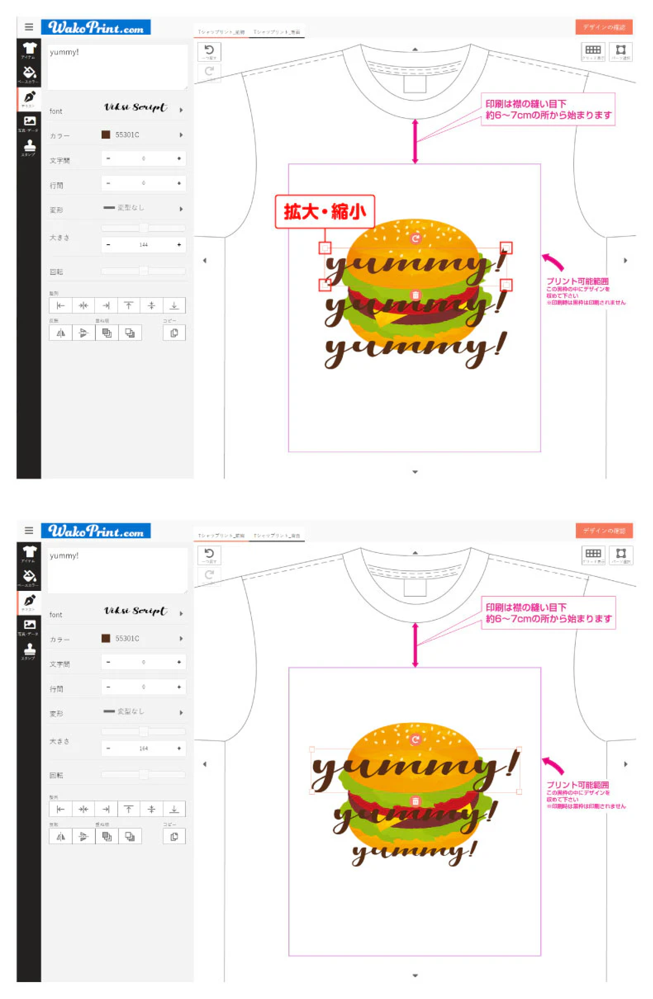
「左右反転」と「上下反転」が可能です。反転させたいパーツを選択した後、メニューにある「反転ボタン」を押します。
元に戻したいときはもう一度同じ反転ボタンか、一つ戻すボタンを押すと元に戻ります。
※一部加工方法では対応しておりません。あらかじめご了承ください。
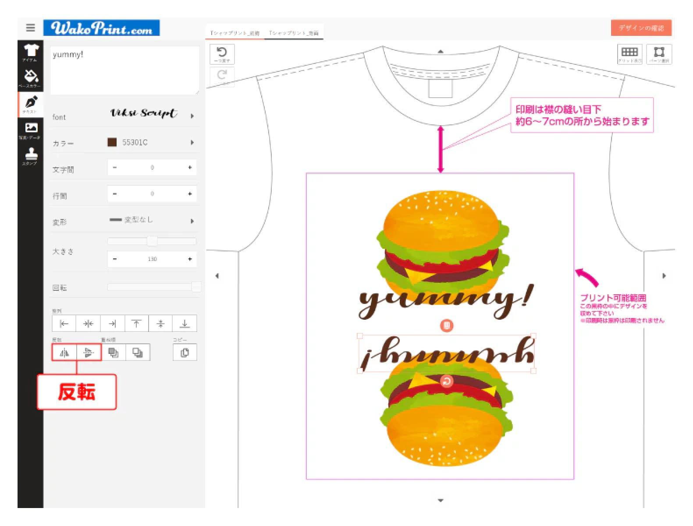
メニューにある「写真・データ」より画像をアップロード出来ます。
①「写真・データ」を選択
②写真やデータをドラッグするか、「またはファイルを選択」をクリック
③ウィンドウで使用する画像またはデータを選択して下さい。
カッティング圧着、レーザーなど加工方法によってはこの機能が使用できない場合もあります。
アップロードできる画像や解像度については下記の「デザインツールで使用できる画像」をご覧ください。
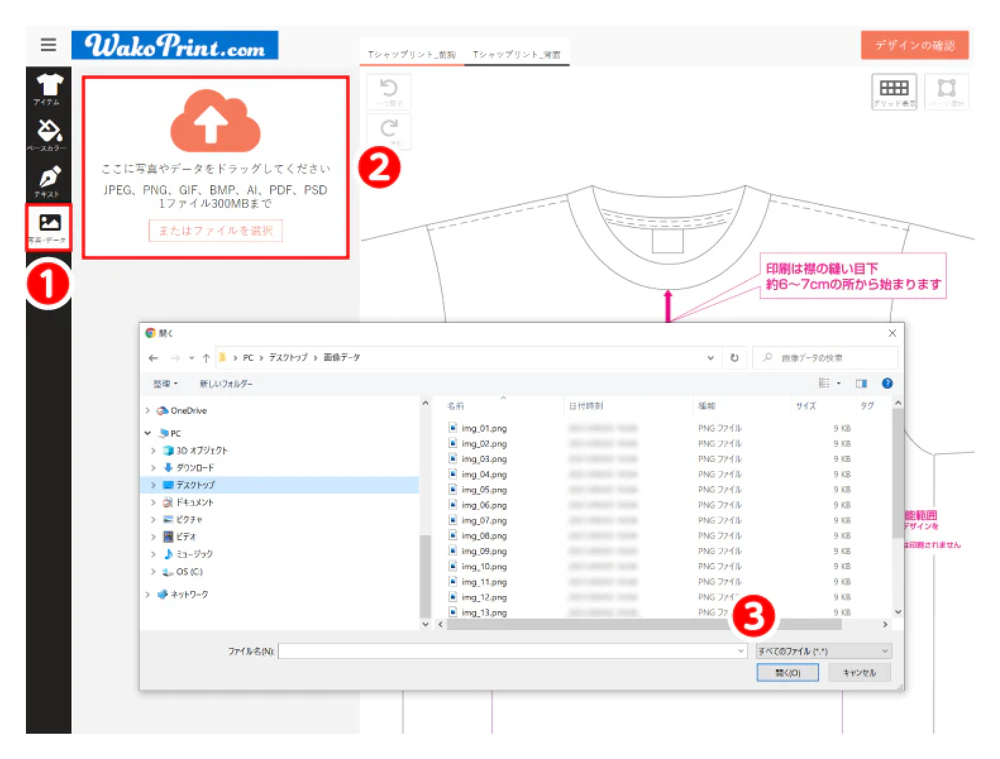
アップロードする画像データは、以下のファイルタイプ(形式)にて作成してください。(.ps形式は非対応)
またデザインツールでアップロードできるファイルサイズは最大300MBまでです。
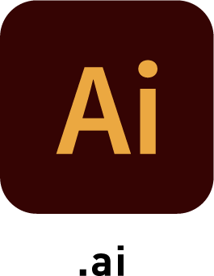
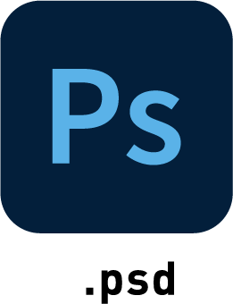
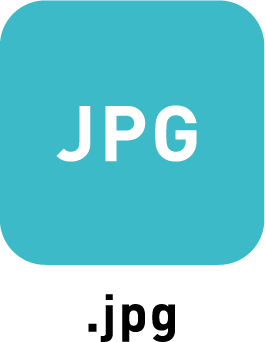
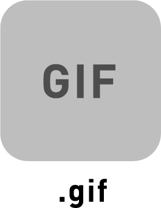
IllustratorやPhotoshopなどのグラフィックソフトを使ってデータを作成する際、ご入稿データ内に含まれる全てのオブジェクトやテキスト、画像などはCMYKカラーにて作成してください。
実際のプリントはCMYKカラーで表現されるため、オブジェクト等をRGBカラーにて作成されると、CMYKとRGBの色域の違いにより色味が異なったり全体的に暗く仕上がることがあります。
また、デザインツールに作成したデータをアップロードする際は、ファイル自体のカラーモードをRGBにて保存してからデザインツールにアップロードをしてください。
CMYKのままアップロードをしてしまうと、ご希望通りの仕上がりにならない可能性がありますのでご注意ください。
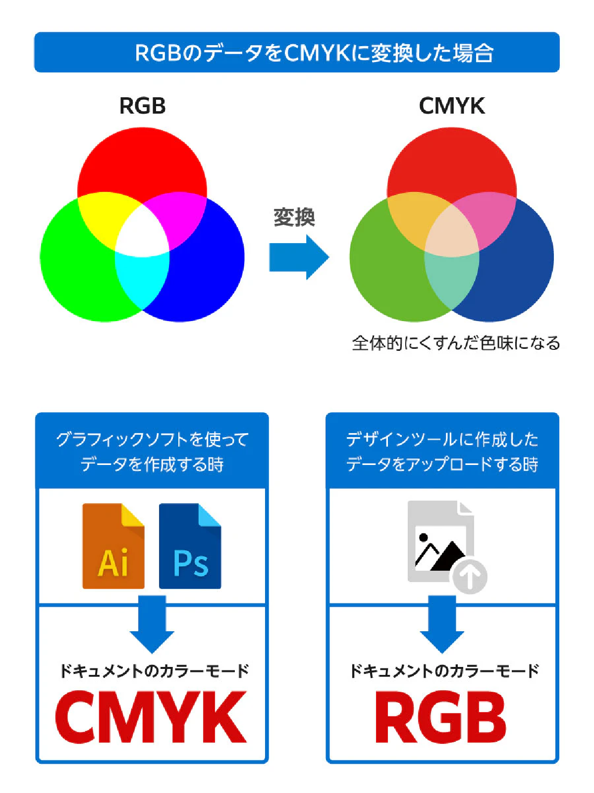
Adobe製品以外の画像編集アプリケーションから作成されたPSD形式画像を入稿すると、透過データでも白背景がついてプリントされる可能性があります。
透過部分をプリントでも再現したい場合はPNG形式で保存した画像をアップロードしてください。
画像は、ドット(点)が集まって表示されています。
画像ファイルの解像度とは、1インチ (≒2.54cm) あたりのドットの密度を数値化したもののことで「dpi」 (dots per inch) という単位で表現されます。
例えば72dpiというのは1インチあたり72個のドットで構成されていて、200dpiは200個のドットで構成されています。
簡単にいうと、数値が高い方が密度が高く、画像の精度が高いということになります。
解像度が高いと、プリント密度も上がり、小さな文字や写真のディテールも表現することができます。
メイクルでは、アップロードされた画像をそのまま商品へプリントします。
200dpiに満たない低解像度の画像でもアップロードは可能ですが、その場合プリントしたいサイズの3~5倍の大きさのものをアップロードしてください。
それによって、プリント実寸の密度を高めることができ、仕上がりの品質も高まります。
低解像度や画像サイズが小さいデータは▲が左下に表示されます。そのまま印刷すると仕上がりが粗くなるため小さくするか解像度の高いデータへ差し替えをお勧めします。
※仕上がり品質を保証するものではありません。
※低解像度や画像サイズが小さいデータをそのままアップロードした場合、仕上がりがギザギザしたり、ぼやけたり、粗くなってしまいます。
※仕上がりの際の画像の粗さによる返品・交換は承れませんので、予めご了承ください。
※もともと小さいサイズの画像を大きく引き伸ばしてアップロードしても、プリント実寸密度は変わらず、仕上がり品質も高まりません。
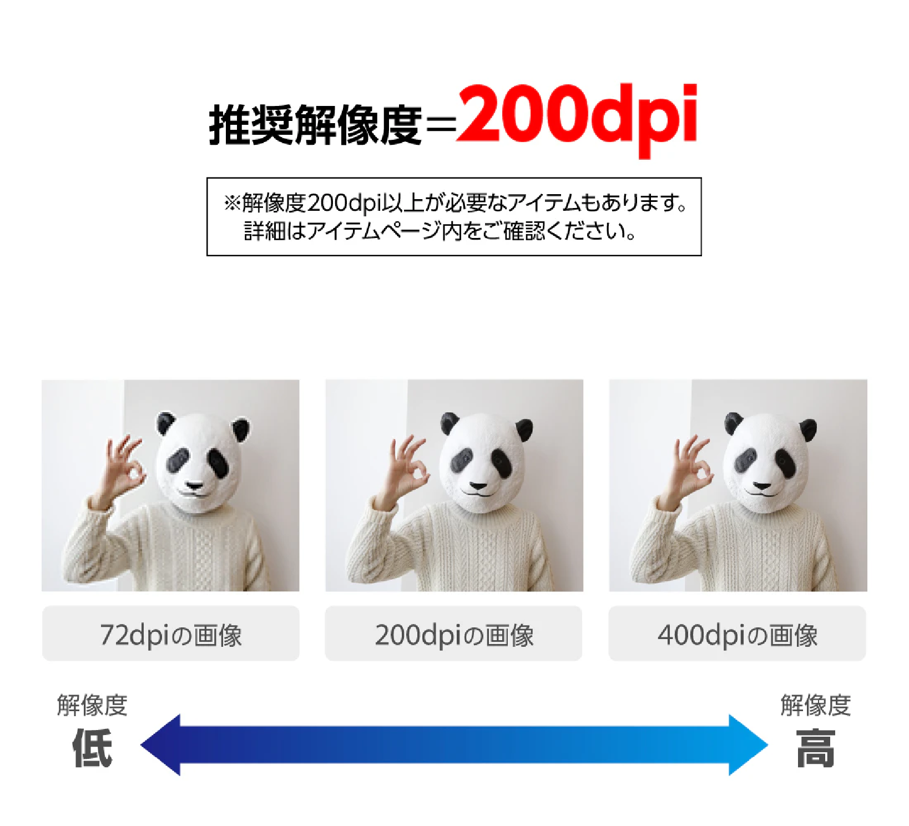
メニューの「スタンプ」を選択すると左側画面が切り替わります。
表示されたプルダウンメニューの中から興味のあるカテゴリーを選択し、ご希望のイラストをクリックすると画面中央の枠の中に、そのイラストが挿入されます。
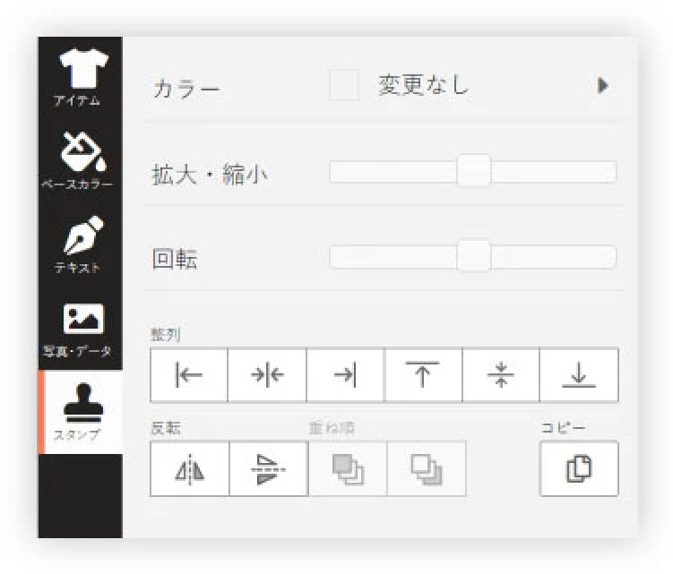
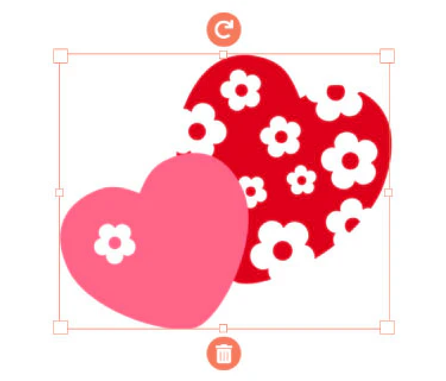
スタンプのカラーを変更したい場合は、そのスタンプが選択されている状態で、「カラー」からご希望のカラーを選択してください。
※塗りカラーの数や設定色は、アイテム種類やプリント方法により異なります。
※塗りカラーで色を選択すると、イラストは1色で塗りつぶされます。
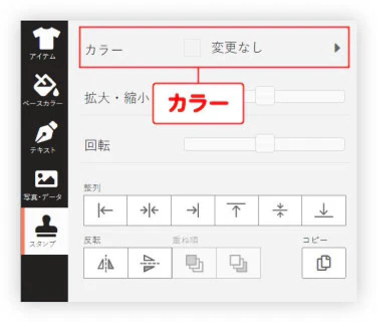
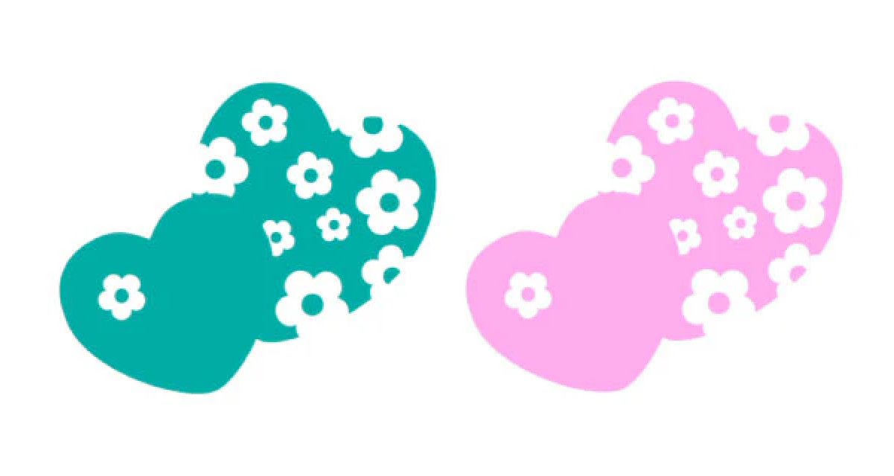
上部にあるメニューから「デザインの確認」を選択し、デザインの確認ページ画面にある「デザインを保存」をクリックするとデザイン名の入力フォームが表示されます。入力フォームにお好きな名前を入力して、下にある「保存する」をクリックするとデザインの保存ができます。
(会員ログインがまだの方は一度ログイン画面に遷移します。)
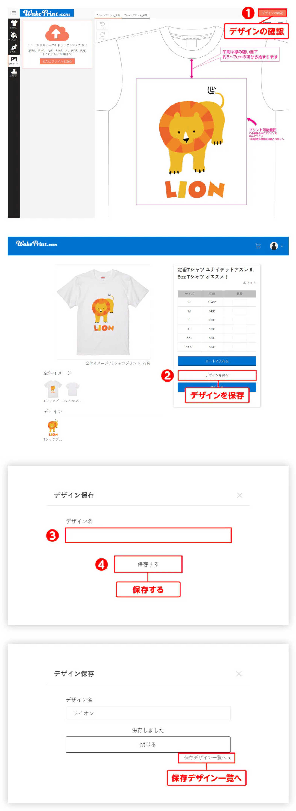
デザインの読み込みは、デザイン名を入力し保存した後に表示される「閉じる」ボタンの下にある「保存デザイン一覧へ」をクリックすると「保存デザイン一覧」のページに切り替わります。
または、上部にあるアカウントロゴをクリックして表示される「アカウント情報」からでも「保存デザイン一覧」を確認できます。
左側メニューの「保存デザイン一覧」を選択すると保存したデザインが表示されますので、ご希望のデザインの「編集」をクリックして読みだしてください。
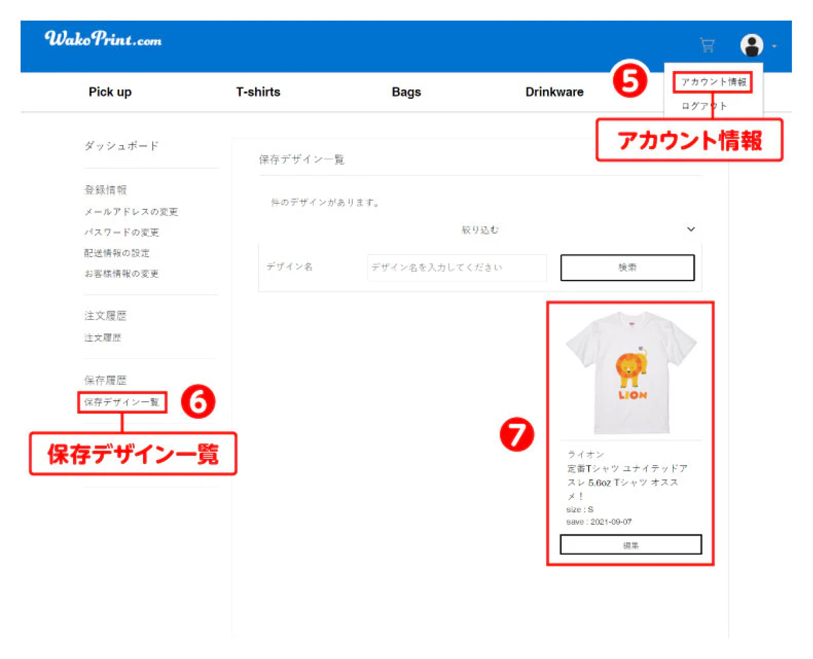